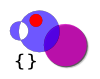
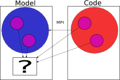
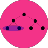

Working with Particle Sets¶
{kind=link}
There are Sets, Subsets, Particles, Children and Parents…¶
The fundamental data structures used in AMUSE are particle sets. Based on attributes of the elements in the sets (particles), selections can be made using the selection method which return subsets. These subsets are views or scopes on the set and do not hold values of their own.
It is also possible to add structure to the set by defining parent-child relationships between particles in a set. These structures exist only in the set and are a property of it and have no meaning with respect to the particles outside the set.
Selecting stars in a plummer model¶
In this tutorial we generate a set of stars, a plummer model, and two subsets of stars. The first subset contains the stars within a certain radius from the center of mass of the plummer system and the second subset contains all the other stars.
The plummer module generates a particle set of the form datamodel.Stars(N).
Imports¶
We start with some AMUSE imports in a python shell: The core module contains the set objects, and the units and nbody_system are needed for the correct assignment of properties to the particles, which need to be quantities.
>>> from amuse import datamodel
>>> from amuse.units import nbody_system
>>> from amuse.units import units
>>> from amuse.ic.plummer import new_plummer_sphere
>>> import numpy
Model¶
Note
A quick way to look at the sets we are going to make is by using gnuplot. If you have gnuplot, you can install the gnuplot-py package to control gnuplot directly from your script.
To install gnuplot-py, open a shell and do:
easy_install gnuplot-py
Let’s generate a plummer model consisting of 1000 stars,
>>> convert_nbody = nbody_system.nbody_to_si(100.0 | units.MSun, 1 | units.parsec)
>>> plummer = new_plummer_sphere(1000, convert_nbody)
We can work on the new plummer particle set, but we want to keep this set unchanged for now. So, we copy all data to a working set:
>>> stars = plummer.copy()
Note
To look at the stars in gnuplot do:
>>> plotter = Gnuplot.Gnuplot()
>>> plotter.splot(plummer.position.value_in(units.parsec))
Selection¶
At this stage we select the subsets based on the distance of the individual stars with respect to the center of mass, being 1 parsec in this example.
We need the center of mass, of course:
>>> center_of_mass = stars.center_of_mass()
and the selection of the sets:
>>> innersphere = stars.select(lambda r: (center_of_mass-r).length()<1.0 | units.parsec,["position"])
>>> outersphere = stars.select(lambda r: (center_of_mass-r).length()>=1.0 | units.parsec,["position"])
Note
To look at the stars in gnuplot do:
>>> plotter = Gnuplot.Gnuplot()
>>> plotter.splot(outersphere.position.value_in(units.parsec), innersphere.position.value_in(units.parsec),)
We can achieve the same result in another way by using the fact that outersphere is the difference of the innersphere set and the stars set:
>>> outersphere_alt = stars.difference(innersphere)
or using the particle subtraction ‘-‘ operator:
>>> outersphere_alt2 = stars - innersphere
The selections are all subsets as we can verify:
>>> outersphere
<amuse.datamodel.particles.ParticlesSubset object at ...>
Set operations¶
The result should be the same, but we’ll check:
>>> hopefuly_empty = outersphere.difference(outersphere_alt)
>>> hopefuly_empty.is_empty()
True
>>> len(outersphere - outersphere_alt2)==0
True
From our selection criteria we would expect to have selected all stars, to check this we could do something like this:
>>> len(innersphere)+len(outersphere) == 1000
True
>>> len(innersphere)+len(outersphere_alt) == 1000
True
>>> len(innersphere)+len(outersphere_alt2) == 1000
True
The union of the innersphere and outersphere set should give the stars set, we can check:
>>> like_stars = innersphere.union(outersphere)
>>> stars.difference(like_stars).is_empty()
True
>>> (innersphere + outersphere_alt2 - stars).is_empty()
True
Iteration¶
We can iterate over sets and we will put that to use here to check whether we really selected the right stars in the outersphere:
>>> should_not_be_there_stars = 0
>>> for star in outersphere:
... if (center_of_mass-star.position).length()<1.0|units.parsec:
... should_not_be_there_stars += 1
>>> should_not_be_there_stars
0
Indexation¶
Not very set like, but can-do.
Using codes¶
Channels¶
{kind=link}
Imagine we evaluate stars in some MPI bound legacy code, and want to know what happened to the stars in our subsets. Each query for attributes in de code set invokes one MPI call, which is inefficient if we have many queries. Copying the entire set to the model, however, costs only one MPI call too and we can query from the model set at will without the MPI overhead. Copying the data from one existing set to another set or subset can be done via channels.
First we define a simple dummy legacy code object, with some typical gd interface methods:
>>> class DummyLegacyCode(object):
... def __init__(self):
... self.particles = datamodel.Particles()
... def add_particles(self, new_particles):
... self.particles.add_particles(new_particles)
... def update_particles(self, particles):
... self.particles.copy_values_of_state_attributes_to(particles)
... particles = self.particles.copy()
... def evolve(self):
... self.particles.position *= 1.1
We instantiate the code and use it to evolve (expand) our plummer model. We add a channel to our innersphere subset to track the changes:
>>> code = DummyLegacyCode()
>>> channel_to_innersphere = code.particles.new_channel_to(innersphere)
>>> code.add_particles(stars)
>>> code.evolve()
>>> r_inner_init = innersphere.position
>>> r_outer_init = outersphere.position
>>> channel_to_innersphere.copy()
>>> r_inner_fini = innersphere.position
>>> r_outer_fini = outersphere.position
Checking the changes by looking at the positions (all changed after the evolve), we will see that only the innersphere particles are updated:
>>> numpy.all(r_inner_init[0]==r_inner_fini[0])
False
>>> numpy.all(r_outer_init[0]==r_outer_fini[0])
True
If we want to update all particles in our model, we can use:
>>> code.update_particles(stars)
and check:
>>> r_outer_fini = outersphere.position
>>> numpy.all(r_outer_init[0] == r_outer_fini[0])
False
Particle Hierarchies¶
{kind=link}
Let us suppose that the zero-th star, stars[0] has a child and a grandchild star who do not belong to the plummer model:
>>> child_star = datamodel.Particle()
>>> grandchild_star = datamodel.Particle()
>>> child_star.mass = 0.001|units.MSun
>>> child_star.position = [0,0,0]|units.AU
>>> child_star.velocity = [0,0,0]|units.AUd
>>> grandchild_star.mass = 0.0001|units.MSun
>>> grandchild_star.position = [0,0.1,0]|units.AU
>>> grandchild_star.velocity = [0,0,0]|units.AUd
We can add them as child and grandchild etc. to the set of plummer stars. But first we have to add them to the set as regular stars:
>>> child_star_in_set = stars.add_particle(child_star)
>>> grandchild_star_in_set = stars.add_particle(grandchild_star)
Now we can define the hierarchy:
>>> stars[0].add_child(child_star_in_set)
>>> child_star_in_set.add_child(grandchild_star_in_set)
The descendants of star 0 form a subset:
>>> stars[0].descendents()
<amuse.datamodel.ParticlesSubset object at ...>
>>> stars[0].children().mass.value_in(units.MSun)
array([ 0.001])
>>> stars[0].descendents().mass
quantity<[1.98892e+26, 1.98892e+27] kg>
Methods to retreive physical properties of the particles set¶
Particle sets have a number of functions for calculating physical properties that apply to the sets. Although some of these might be implemented in the legacy codes as well, using them via particle sets guarantees the applicability to all particles when multiple legacy codes are used. Furthermore, the particle set functions provide a uniform way of doing the calculations. Speed might be the downside.
-
amuse.datamodel.particle_attributes.center_of_mass(particles) Returns the center of mass of the particles set. The center of mass is defined as the average of the positions of the particles, weighted by their masses.
>>> from amuse.datamodel import Particles >>> particles = Particles(2) >>> particles.x = [-1.0, 1.0] | units.m >>> particles.y = [0.0, 0.0] | units.m >>> particles.z = [0.0, 0.0] | units.m >>> particles.mass = [1.0, 1.0] | units.kg >>> particles.center_of_mass() quantity<[0.0, 0.0, 0.0] m>
-
amuse.datamodel.particle_attributes.center_of_mass_velocity(particles) Returns the center of mass velocity of the particles set. The center of mass velocity is defined as the average of the velocities of the particles, weighted by their masses.
>>> from amuse.datamodel import Particles >>> particles = Particles(2) >>> particles.vx = [-1.0, 1.0] | units.ms >>> particles.vy = [0.0, 0.0] | units.ms >>> particles.vz = [0.0, 0.0] | units.ms >>> particles.mass = [1.0, 1.0] | units.kg >>> particles.center_of_mass_velocity() quantity<[0.0, 0.0, 0.0] m * s**-1>
-
amuse.datamodel.particle_attributes.kinetic_energy(particles) Returns the total kinetic energy of the particles in the particles set.
>>> from amuse.datamodel import Particles >>> particles = Particles(2) >>> particles.vx = [-1.0, 1.0] | units.ms >>> particles.vy = [0.0, 0.0] | units.ms >>> particles.vz = [0.0, 0.0] | units.ms >>> particles.mass = [1.0, 1.0] | units.kg >>> particles.kinetic_energy() quantity<1.0 m**2 * kg * s**-2>
-
amuse.datamodel.particle_attributes.potential_energy(particles, smoothing_length_squared=quantity<zero>, G=quantity<6.67428e-11 m**3 * kg**-1 * s**-2>) Returns the total potential energy of the particles in the particles set.
Parameters: - smooting_length_squared – gravitational softening, added to every distance**2.
- G – gravitational constant, need to be changed for particles in different units systems
>>> from amuse.datamodel import Particles >>> particles = Particles(2) >>> particles.x = [0.0, 1.0] | units.m >>> particles.y = [0.0, 0.0] | units.m >>> particles.z = [0.0, 0.0] | units.m >>> particles.mass = [1.0, 1.0] | units.kg >>> particles.potential_energy() quantity<-6.67428e-11 m**2 * kg * s**-2>
-
amuse.datamodel.particle_attributes.particle_specific_kinetic_energy(set, particle) Returns the specific kinetic energy of the particle.
>>> from amuse.datamodel import Particles >>> particles = Particles(2) >>> particles.vx = [0.0, 1.0] | units.ms >>> particles.vy = [0.0, 0.0] | units.ms >>> particles.vz = [0.0, 0.0] | units.ms >>> particles.mass = [1.0, 1.0] | units.kg >>> particles[1].specific_kinetic_energy() quantity<0.5 m**2 * s**-2>
-
amuse.datamodel.particle_attributes.particle_potential(set, particle, smoothing_length_squared=quantity<zero>, G=quantity<6.67428e-11 m**3 * kg**-1 * s**-2>) Returns the potential at the position of the particle.
Parameters: - smooting_length_squared – gravitational softening, added to every distance**2.
- G – gravitational constant, need to be changed for particles in different units systems
>>> from amuse.datamodel import Particles >>> particles = Particles(2) >>> particles.x = [0.0, 1.0] | units.m >>> particles.y = [0.0, 0.0] | units.m >>> particles.z = [0.0, 0.0] | units.m >>> particles.mass = [1.0, 1.0] | units.kg >>> particles[1].potential() quantity<-6.67428e-11 m**2 * s**-2>